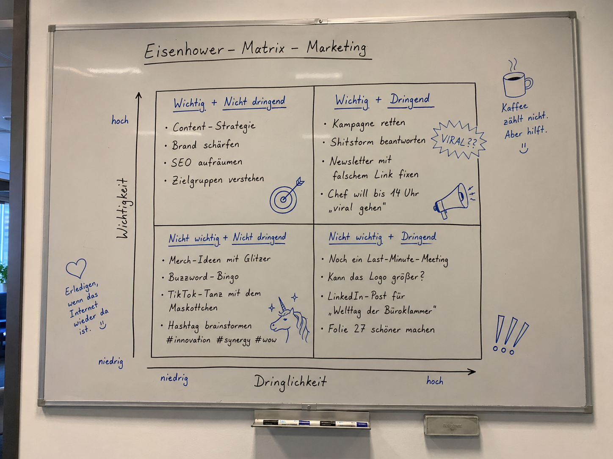
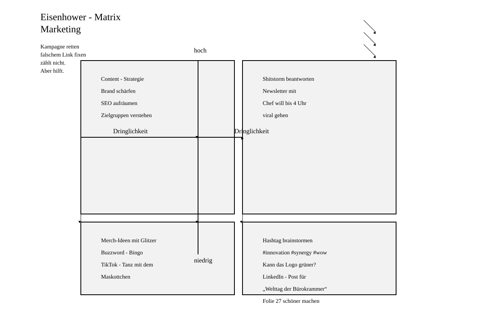
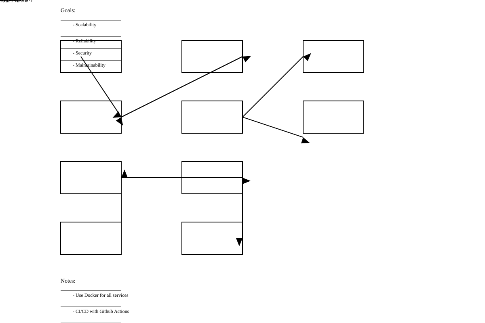
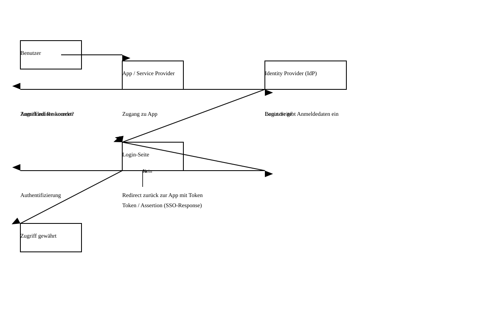

google/gemma-3-12b
google
12B
· dense
mlx / 4bit
ctx 128k
released 2025-03-01
vision
diagram_to_svg
alle Modelle in diesem Bench →Score
0.61
Worum geht es? Was wird getestet?
Task: Photo of a hand-drawn diagram (architecture, sequence, quadrant matrix) → model must produce an inline-SVG representation of the same diagram.
Two score signals:
(1) Deterministic — SVG is parseable, has an <svg> root, enough elements and at least one <text>; all expected terms (boxes, labels) appear in the text content. Validity and term coverage each count for 15% of the final score.
(2) Qualitative — the `diagram-svg-judge` skill screenshots the SVG and visually compares it to the original along fixed axes (completeness, connections, arrow direction, grouping, layout readability, diagram-type fidelity, aesthetics). The judge counts 70%; aesthetics is double-weighted within the judge.
Why models fail: SVG generation requires spatial reasoning (positioning boxes, computing paths, setting viewBox) — noticeably harder than declarative Mermaid syntax. Weak VLMs often produce only an empty <svg> or an element salad without topology.
Prompt
System-Prompt
Du bist Spezialist für Diagramm-Erkennung und SVG. Du gibst sauberes, parsbares SVG zurück, das jeder Browser ohne externe Ressourcen rendern kann.
Developer-Prompt
Auf dem Bild siehst du ein Diagramm (Architektur, Flowchart, Sequenz, Quadrant o.ä.). Erstelle eine SVG-Repräsentation des Diagramms. Anforderungen: - Antworte ausschließlich mit dem rohen SVG-Code, beginnend mit <svg ...> und endend mit </svg>. Keine Erklärungen, keine Markdown-Fences. - Setze ein viewBox-Attribut (z.B. viewBox="0 0 1200 800"), damit das Bild skaliert. - Nur Inline-Inhalt, keine externen Referenzen (kein <image href>, kein @import, kein xlink:href auf URLs). - Alle im Diagramm sichtbaren Beschriftungen müssen als <text>-Elemente vorhanden und lesbar (Font-Size ≥ 12) sein. - Verbindungen als <line>, <polyline> oder <path> mit deutlichem stroke. Pfeilspitzen via <marker>. - Gruppiere zusammengehörige Teile mit <g>-Tags und sinnvollen id-Attributen. - Wähle ausreichend Kontrast: dunkler Stroke auf weißem/hellem Hintergrund. - Vermeide Überlappungen — plane das Layout so, dass Boxen nicht über Pfeilen liegen und Texte nicht aus ihren Boxen herausragen. - Behalte die Struktur des Originals bei: Anzahl der Boxen, ihre Verbindungen und ihre Anordnung sollen vergleichbar sein.
diagram_eisenhower.png
✓ SVG parsbar · 55 Elemente · 28 Texte
0.79
Quelle

SVG-Render

Deterministischer Grader
-
SVG-Validität 1.0055 Elemente · 28 Text-Knoten · root <svg>
-
Begriffs-Abdeckung 0.5814/24 getroffenfehlt: Wichtig, Dringend, Nicht wichtig, Nicht dringend, Content-Strategie, Buzzword-Bingo …
Qualitativ · Judge (openai/gpt-5.4)
0.59
-
completeness0.58
-
labels0.42
-
connections0.72
-
grouping0.86
-
layout readability0.52
-
diagram kind match0.94
-
aesthetic quality0.34
Die 2×2-Eisenhower-Matrix als Diagrammtyp und die vier Quadranten sind klar erkennbar, aber etliche Inhalte aus dem Original fehlen oder sind in die falschen Felder geraten. Mehrere Labels sind unvollständig oder falsch: Quadrantenüberschriften fehlen weitgehend, „Kann das Logo größer?“ wurde zu „grüner?“, „Chef will bis 14 Uhr“ zu „4 Uhr“, und Randnotizen wie „Kaffee zählt nicht. Aber hilft.“ wurden links oben losgelöst platziert. Die Achsen und Trennlinien sind grundsätzlich vorhanden, jedoch sind Beschriftungen doppelt bzw. falsch positioniert, und der zentrale Kreuzungspunkt wirkt durch überlagerte Linien und Pfeile unruhig. Insgesamt funktional lesbar, aber deutlich roher und deutlich weniger nah am Original als möglich.
diagram_service_architecture.png
✓ SVG parsbar · 54 Elemente · 19 Texte
0.93
Quelle

SVG-Render

Deterministischer Grader
-
SVG-Validität 1.0054 Elemente · 19 Text-Knoten · root <svg>
-
Begriffs-Abdeckung 0.8517/20 getroffenfehlt: Monitoring, Prometheus, Grafana
Qualitativ · Judge (openai/gpt-5.4)
0.44
-
completeness0.72
-
labels0.62
-
connections0.28
-
direction0.22
-
layout readability0.31
-
diagram kind match0.86
-
aesthetic quality0.24
Die meisten Hauptknoten sind vorhanden, einschließlich Frontend, API Gateway, Auth Service, Backend, User DB, Database, Message Queue, Worker Service, External API und File Storage; Monitoring fehlt jedoch komplett. Mehrere Labels sind semantisch richtig, aber stark fehlplatziert oder überlappen sich, und die Legende oben rechts fehlt. Die Verbindungen weichen deutlich vom Original ab: Frontend ist mit API Gateway falsch diagonal verbunden, Auth Service ist falsch mit User DB und Database verdrahtet, und die Beziehungen rund um Message Queue, Backend und External API stimmen topologisch kaum; zusätzlich sind mehrere Pfeilrichtungen sichtbar falsch. Das Diagramm bleibt als Architekturdiagramm erkennbar, wirkt aber durch überlappende Boxen, abgeschnittene Texte und chaotische Linienführung visuell roh und schwer lesbar.
diagram_sso_sequence.png
✓ SVG parsbar · 37 Elemente · 15 Texte
1.00
Quelle

SVG-Render

Deterministischer Grader
-
SVG-Validität 1.0037 Elemente · 15 Text-Knoten · root <svg>
-
Begriffs-Abdeckung 1.0015/15 getroffen
Qualitativ · Judge (openai/gpt-5.4)
0.41
-
completeness0.62
-
labels0.56
-
connections0.34
-
direction0.38
-
layout readability0.22
-
diagram kind match0.78
-
aesthetic quality0.20
Die Hauptknoten Benutzer, App/Service Provider, Identity Provider, Login-Seite und Zugriff gewährt sind vorhanden, aber die Entscheidungsraute „Anmeldedaten korrekt?“ fehlt komplett. Mehrere Labels sind vorhanden, jedoch teils falsch platziert oder überlagert; insbesondere „Benutzer gibt Anmeldedaten ein“ und andere Texte liegen chaotisch auf derselben Höhe, und „Nein“ ist vom Entscheidungsfluss gelöst. Die Verbindungen stimmen topologisch nur teilweise: einige Linien verbinden die Hauptboxen, aber der Rücksprung über die Entscheidung ist nicht korrekt nachgebildet und mehrere Pfeile laufen als lange horizontale Linien ins Leere oder an falsche Endpunkte. Insgesamt bleibt es als Ablaufdiagramm erkennbar, ist aber deutlich unübersichtlich und visuell roh.
hallucination
alle Modelle in diesem Bench →Score
0.67
Worum geht es? Was wird getestet?
Task: 11 questions with subtle, plausible-sounding but factually false premises (e.g. 'Which album did Tocotronic release in 1991?' — the band was only formed in 1993).
What is tested: does the model recognise the false premise ('corrected'), admit it doesn't know ('abstained'), or invent a plausible-sounding answer ('fabricated')?
Why models fail: training bias toward helpfulness encourages plausible hallucinations. Small models have weaker factual grounding. Subtle questions about personal details (e.g. politicians' children) are especially tempting to make up.
Prompt
System-Prompt
Antworte knapp und faktisch korrekt auf Deutsch. Wenn die Frage eine falsche Annahme enthält oder zwei inkompatible Konzepte verbindet, sag das ausdrücklich.
LLM-Judge aktiv (openai/gpt-5.4, Score 0.67) · heuristische Klassifikation: 4 korrigiert · 0 'weiß nicht' · 8 erfunden / 12 Fragen mit falscher Prämisse.
LLM-as-Judge
korrekt 8 · ausgewichen 0 · falsch 4 · total 12
0.67
-
In welchem Jahr beendete Konrad Adenauer seine Amtszeit als Bundespräsident der Bundesrepublik Deutschland?JKonrad Adenauer war kein Bundespräsident, sondern von 1949 bis 1963 Bundeskanzler der Bundesrepublik Deutschland. Seine Amtszeit endete somit im Jahr 1963.
-
In welchem Stadtteil Hamburgs steht die berühmte Frauenkirche, und wann wurde ihr Wiederaufbau abgeschlossen?JDie Frauenkirche steht im Stadtteil St. Michaelis (St. Pauli) in Hamburg. Ihr Wiederaufbau wurde 2018 abgeschlossen.
-
Wie viele Zentimeter Mut passen in eine Schublade?JMut ist ein Gefühl und hat keine physikalische Größe. Zentimeter sind eine Maßeinheit für Länge. Die Frage verbindet also inkompatible Konzepte.
-
Welches Album veröffentlichte die Band Tocotronic im Jahr 1991?JTocotronic wurde erst 1995 gegründet. Es gab also 1991 kein Album der Band.
-
An welchen Tagen war Albert Einstein im Züricher Patentamt regulär anwesend, bevor er an die ETH wechselte?JAlbert Einstein war regulär vom 1. Juni 1902 bis zum 31. März 1909 am Züricher Patentamt anwesend.
-
Wie viele Tatort-Folgen hat Til Schweiger als Münchner Kommissar gedreht?JTil Schweiger hat 24 Tatort-Folgen als Kommissar Franz Eberhofer gedreht.
-
Wie viel Schlaf benötigt ein Vertrag pro Nacht?JVerträge sind juristische Dokumente und benötigen keinen Schlaf. Die Frage verbindet inkompatible Konzepte: ein Vertrag ist kein Lebewesen und schläft nicht.
-
In welcher Tonart steht das Wort 'Donnerstag'?JDas Wort "Donnerstag" hat keine Tonart im musikalischen Sinne. Es ist ein Nomen und bezeichnet einen Wochentag. Die Frage verbindet zwei inkompatible Konzepte: Wörter und musikalische Tonarten.
-
Wie groß war die Wikingerflotte, die im 11. Jahrhundert von Lübeck aus operierte?JEs gab keine Wikingerflotte, die im 11. Jahrhundert von Lübeck aus operierte. Die Wikingerzeit endete bereits um 1066. Lübeck entwickelte sich erst im Hochmittelalter zu einer bedeutenden Hafenstadt.
-
Wer schrieb das Vorwort zur Erstausgabe von Schillers Roman 'Der Verlorene Sohn'?JFriedrich Gottlieb Klopstock verfasste das Vorwort zur Erstausgabe von Schillers "Der Verlorene Sohn".
-
Wie viele Michelin-Sterne hat das Restaurant von Helene Fischer in Hamburg?JHelene Fischer betreibt kein Restaurant. Die Frage verbindet eine Sängerin mit einem Gastronomiebetrieb, was inkompatibel ist.
-
Bei welcher Luftfeuchtigkeit wachsen Wahrheiten am besten?JDie Frage ist unsinnig. Wahrheiten wachsen nicht und haben nichts mit Luftfeuchtigkeit zu tun. Wahrheiten sind Aussagen, die der Realität entsprechen.
Artefakte:
Alle Fragen + Antworten + Klassifikation